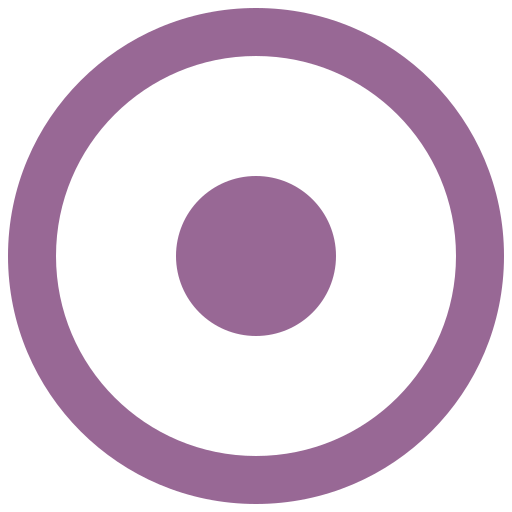

Développeuse web
Adresse :
Takinogawa 2-Chome 19-4,
Kita-ku Tokyo (114-0023),
Japan
Téléphone :
+81 80 2280 7963
Email :
c_guevara02@yahoo.fr
Skype :
@claudia933
Graphique designer de formation, j’ai 10 ans d’expérience professionnelle dans le domaine du packaging. Actuellement je suis en train d’élargir mes connaissances vers le développement web. Mon objectif est de pourvoir offrir des solutions complètes de supports de communications pour les entreprises, avec une cohérence de l’identité de l’entreprise ou de la marque. Mes compétences permettent de couvrir les supports de communication physiques : document, brochures, packaging de produits, affiches ainsi que les supports numériques : site de présentation de l’entreprise, catalogue de produits, mailing list, etc.
Développeuse web

2020
Tokyo
Développeur Web
OpenClassrooms (école en ligne en France)
2003 - 2004
Espagne
Master en Art et Nouvelles Technologies
Universidad Europea de Madrid (UEM)
1998 - 2002
Mexique
Formation universitaire en Design Graphique (équivalent à Bac+4)
Universidad del Valle de México
3 mois (sep - nov 2019)
Tokyo
Ahead Group
Amélioration graphique du site Web de l’entreprise.
Création de contenu et planning de publication sur les réseaux sociaux.
10 ans (juil 2007 - déc 2017)
Paris
Sun Pharma
Packaging manager au sein d’un laboratoire pharmaceutique :
1,5 ans (fév 2006 - juin 2007)
Paris
Global Gifts
Création de l’identité des marques et du packaging de différentes lignes de produits
gastronomiques pour le tourisme international.
Création de catalogues pour la promotion des produits.
3 mois (oct - déc 2005)
Paris
Orphelinats d’Afrique
Création de supports de communication interne et externe :
catalogues, affiches, annonces publicitaires, brochures, mailing,
retouches photographiques.
9 mois (fév - oct 2003)
Mexico
Groupe CAPINTE
En charge de la communication visuelle dans un organisme de
formation pour les professionnels.
3 mois (oct - déc 2002)
Mexico
FORCOM
Création graphique et réalisation des films quadri pour impression dans une
entreprise d’infographie.
2 ans (août 2000 - juil 2002)
Mexico
Universidad del Valle de México
Création de supports de communication, administration, coordination de
30 étudiants pour l’organisation d’événements.
Design
Langages